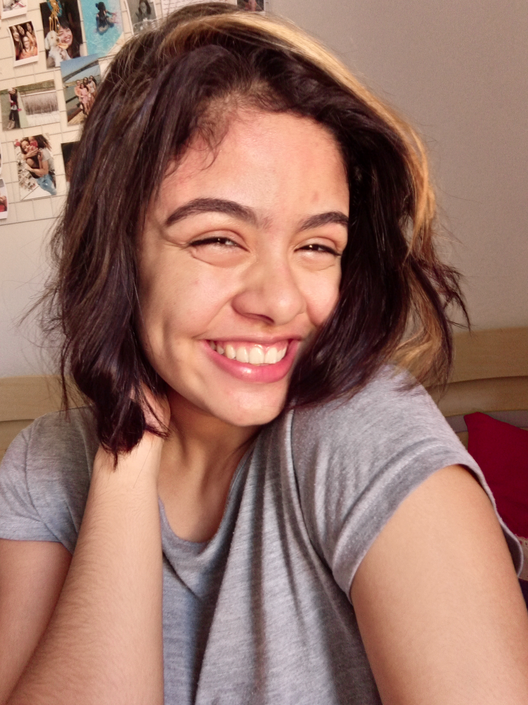

{Laura Macedo}
Olá! Eu sou a Laura, e criei esta página para contar um pouco mais sobre mim. Espero de coração que vocês gostem.

Alguns dados importantes
Eu nasci no dia 26 de março de 2003, uma quarta-feira, às 11:00{fui um pouco precisa demais=)}, nasci em São Paulo, mas agora moro no Piauí. Atualmente, tenho 17 anos e estou no meu último ano no Ensino Médio. Estudo no IFPI-campus Teresina Central e faço o curso de informática. Estou me preparando para fazer o ENEM em 2021, e por mais que eu ame tudo o que envolve a tecnologia, vou tentar garantir minha vaga no curso de Medicina Veterinária. Eu amo ler e assistir filmes e séries, e vou citar para vocês alguns deles.
Meus livros preferidos
- Harry Potter e o prisioneiro de Asckaban-J.K. Rowling
- A menina que roubava livros-Markus Zusak
- Tartarugas até lá embaixo-John Green
- Anne de Green Gables-L.M. Montgomery
Meus filmes preferidos
- Barbie e o Lago dos Cisnes
- As branquelas
- Crush à altura
- Dançarina imperfeita
Minhas séries preferidas
- Sherlock
- Anne With An E
- Desventuras em Série
- Pousando no Amor
Algumas curiosidades
- Minha cor favorita é amarelo
- Sou apaixonada por Harry Potter
- Eu já escrevi quatro minilivros, mas infelizmente nunca postei nenhum
- Eu faço parte de um projeto, Start Coding, e ajudo no podcast e no grupo de mídias